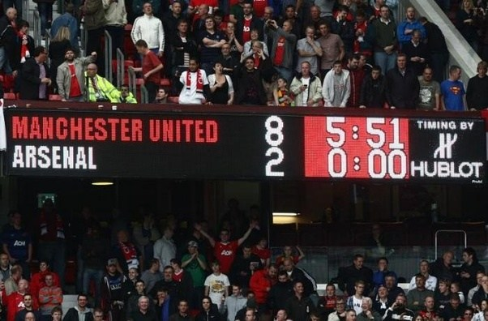
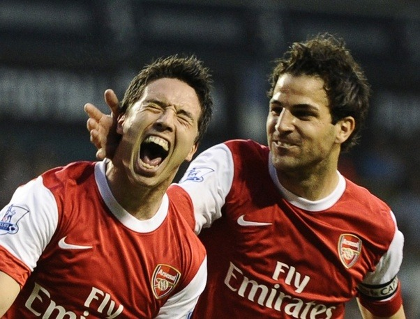
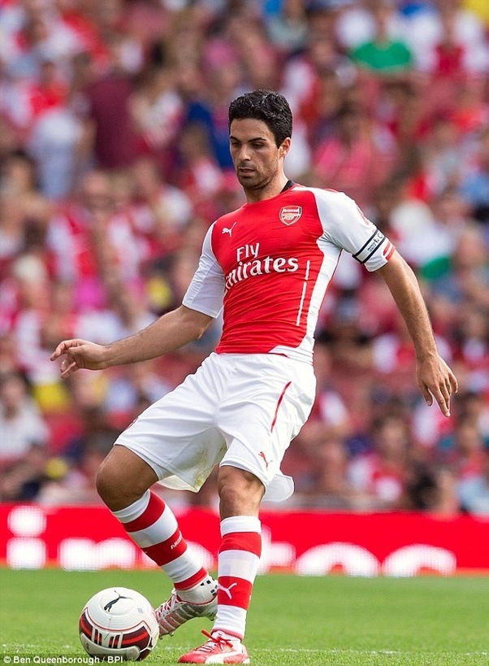
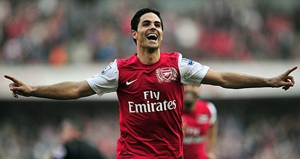

Wait what? Yes, yes the same guy. That guy who didn’t play at all in his last two seasons for Arsenal. Yes, the same ‘middling midfielder’ who couldn’t get a game for Spain. Yes, the one who played for Rangers and a PSG without Qatar money. And yes, that crocked Arsenal captain.
But to say that is a gross injustice to his talent and his qualities which Arsenal desperately needed.
A few weeks ago, I was having a chat in an Arsenal fan’s WhatsApp group. I shared a picture of Arteta and praising him for how he kept his hair perfect during games. And in no time, I found myself arguing with another Gooner about Mikel Arteta.
I had mentioned in the caption, the word legend. He took offence to that, and ranted about how mediocre he was and he was a symbol of how bad Arsenal were at that point in time (I wonder what is our state now? Better?). And a few of the points mentioned above came up too.
Ok maybe he is not an Arsenal legend, but he was not just a passenger. He has done a lot for Arsenal in the years he has been there!
It made me realise he has been severely under-rated, and even more revisionism has taken place since he has retired.
Just for context:
He arrived at Arsenal on transfer deadline day for 10m pounds from Everton. That is three days after:  And we had lost: Imagine this: A manager with no trophy of any form in 7 years, one point from three games, three red cards in as many games, losing two big stars to supposed ‘rivals’. There was only one way from there: Down.
Not many would have blamed Arteta if he had passed on the opportunity and stay at a relatively stable Everton who could have challenged themselves under the then solid David Moyes.
But he took the challenge and came into the club wearing the number eight shirt. He arrived a creative midfielder, but took up a role similar to his friend Xabi Alonso. He was a deep playing playmaker now, and despite Arsene Wenger’s lack of defensive structure to help him out, he did his job.
I know it was Van Persie’s goals that season which saved us, but without the arrivals of Per Mertesacker and Arteta (and Benayoun too), we wouldn’t have had the experience, the composure or the leadership needed to lift the team to third place, and making sure the club can continue the smooth transition to a title challenging team based on sound financial principles (spoiler: We haven’t)
 Footballing Qualities
Footballing Qualities
He was always composed on the ball despite being in tight situations. At his best, he was as good if not better than the likes of Michael Carrick. In a game against Liverpool where Cazorla, Ozil and Ramsey starred in a 2–0 win, Jamie Redknapp was lavish in praise for Arteta:
Arteta's role today was a different class and if you compare that to what Lucas - who never really covered the ground and the areas that he needed to - did for Liverpool, he was spot on. Everything he did defensively, plus his all-round performance, gave everyone a platform to go and play. It's not easy in there in this Arsenal team because people always go running forward with the ball, and at times he must see plenty of red shirts running forward, but not too may running back. He has to always back up the play and the one time he did break with the ball, he made the [first] goal for his team. It was quality midfield play and at times people like him in that system never get the plaudits they deserve. 
He does the dirty work and also can be a creative force from deep in the midfield. It is now we see with Xhaka and Ramsey that they lack that ability to keep the ball ticking that Arteta had:
Off the pitch:Mentored the likes of Hector Bellerin, who still had only praises for him. He has that calming presence about him which made him invaluable to the dressing room even when unfit.
And of course, perfect hair.
No, seriously though his biggest quality which makes me love him, and which might turn off modern football fans is his humility. He acknowledged his negatives:
“You have to be honest with yourself,” he said. “For me, the standards you need to play for this club – it cannot be eight out of 10. It has to be 10 out of 10. When you cannot deliver that, it is not good enough. Sometimes, people get away with it. Inside myself, my gut wasn’t clean and, when you are like this, I prefer to make the decision myself.” And how he speaks up for himself and the club: “It’s a day I will never forget, I can only thank everyone for how you have all behaved with me and my family in those magnificent five years.” he said.It’s his classiness off the pitch which endears him to me.
“When you leave the club is when you see what you mean to people and how you feel about the club. My emotions and the way I feel about the people cannot be any better. I was very scared about this day because 99 per cent, that was my last game as a professional footballer. “I can’t even talk. I feel very honoured to play for this club and captain this place. This club is class and once you are here you never forget it. It’s going to be hard for me to move on, but I really enjoyed today.” “We are disappointed, because this group of players have the ability to win the Premier League. We have not managed to do it and I have to say sorry as captain, not to be able to lead this club to what we wanted. “But at the same time, I know the guts of this club and people can be very honoured and grateful for what people do inside, because it can’t get much better than that.”Football isn’t just about being the best at controlling the football and putting it in the back of the net. It is about being a leader, helpin out your team mates and showing that the team is the collective.
I feel sorry for those who just support players like Neymar who comes off as such a petulant brat (see Cavani incident), and I would rather root for guys like Arteta than a Neymar even though the latter is more talented. It’s not just trophies and selfies that makes up football, new football fans.And I am not alone: Arsenal fan testimonies:(Arseblog News)
-All the captains since have been better players, maybe even better leaders but none have been as humble and as mr arsenal as Arteta.
-I have to say I did get a lump in my throat watching him tear up for his interview on Homepage | Arsenal.com.
The guy just loves his football, and it pains me that I had negative thoughts about him staying last summer. The dude was just desperate to sign off well.
-Mikel Arteta allegedly (I say allegedly because I don’t know this for a fact) took a paycut, came to us and helped steady the ship in a year that looked to be going horribly wrong. And he’s never once complained. He could’ve stayed at Everton, be content playing for a side facing less scrutiny and pressure but he didn’t. Came and gave nothing less than 100% every game and led the boys the best he could. He didn’t run away or shirk from the hard times.
Arteta has been class. I was really happy he got involved in his last game, you can see how much the club means to him. I hope we keep him on in a non-playing role. Even if we don’t, we should try to get him once he sorts out his coaching badges. Brilliant character.
-Get him a statue – A leader amongst men.
-I still remember the day we signed him. After all the deliberations, I was thrilled we finally managed it at the last moment on deadline day.
Some people really have short memory, and have questioned his value and contribution to the club. The season he joined, Cesc and Nasri had left us, and we were beaten 8-2 at United.
It was the worst time of my life as a Gooner. Arteta came and stabilized our midfield, and our club. He chose us when others departed us, and he even sacrificed his attacking midfield role for the team. He became so pivotal that we didn’t win a single league match without him till the final day in 11-12. In 12-13 he provided the base for Ramsey’s most successful season till date. We led the league for long periods till injury curse struck and United claimed the crown. Even then, he outperformed Carrick who was voted in the team of the year. It was fitting that he led us to our FA cup thus ending our trophy drought. His legs may have gone in the last two seasons but his professionalism and leadership was there for all to see.I will always love and respect what he has done for us. Farewell Capitan, and may you find success in your future. And I hope he returns one day to lead us to further glory.
Thank you! Image: Talksport, IBTimes,Daily Mail, Arseblog News, Sky Sports